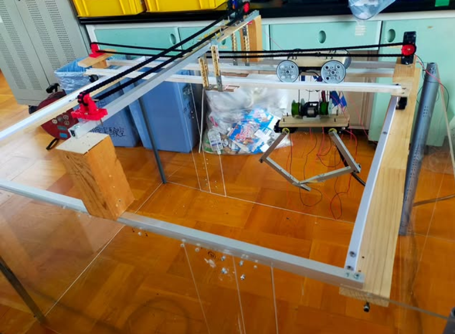

山梨県立甲府南高校に属する部活の一つである。SSH4部と呼ばれる部活の一つであり、日々の活動はそれぞれが所属する部門に関する活動を行っている（ロボット制作、ゲーム作成、武器作成、動画、ツール…etc）
私たちは基本的に大会への参加を活動としています。ロボコンやまなし、U16プログラミングコンテスト等々…。部活としてだけでなく、個人的に大会へ参加をすることもあります。
大会だけでなく、ボランティア活動にも力を入れています。甲府こども応援フェスタでのpepperを使用したプログラミング講座、小学校への出前授業...etc。
私たちは北館3階の物理実験室で活動をしています。
ここには私達の活動に欠かせない道具達が揃っています。
・高速切断機（主にアルミの角材の切断に使用）
・卓上糸のこ盤（主に木材、アルミの板の切断に使用）
・卓上丸のこ盤（主に木材、アルミの板を直線に切断する際に使用）
・卓上ボール盤（主に穴をあける際に使用）
・フライス盤（主に木材、アルミの角材を削る際に使用）
・旋盤（主に木材、アルミの円柱を削る際に使用）
いつでもアイディアをかたちにする環境が整っています。
学園祭は数理情報部にとって最大のアピールチャンスです。私達の存在を学校中に轟かせてあげましょう。そのために手段はあまり選びません。
私達は毎年展示を行います。ゲーム制作部門の部員達の「自作ゲーム」、機械工作部門の目玉「クレーンゲーム」、IT部門の努力の結晶「プリクラ」…etc。部門、部員個人の作品を来場者の方々に触れてもらう機会にしています。
